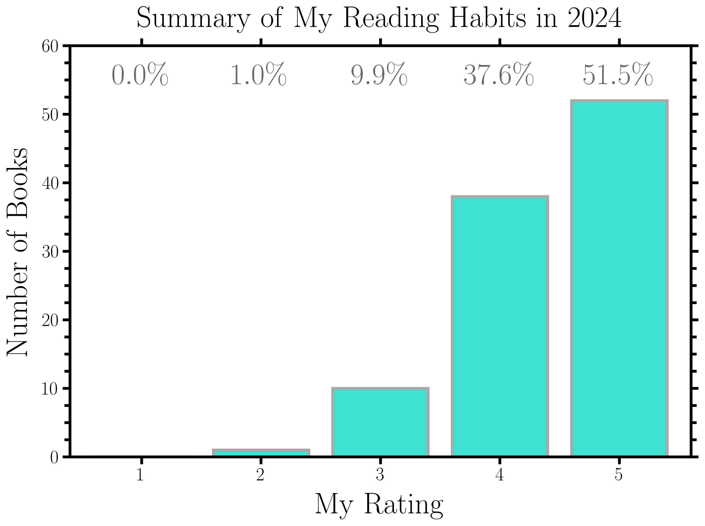
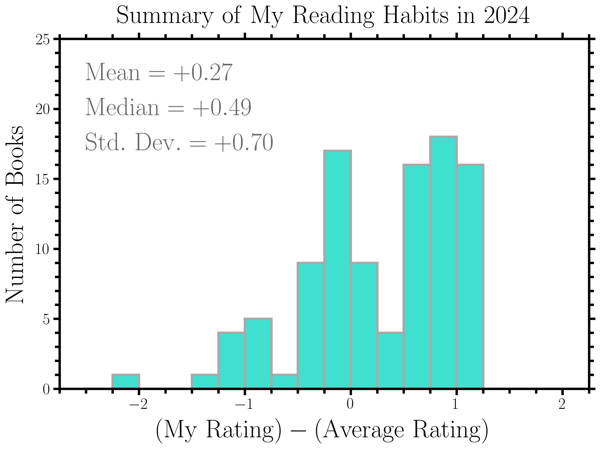
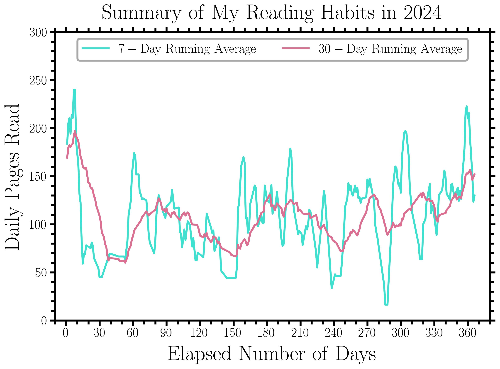
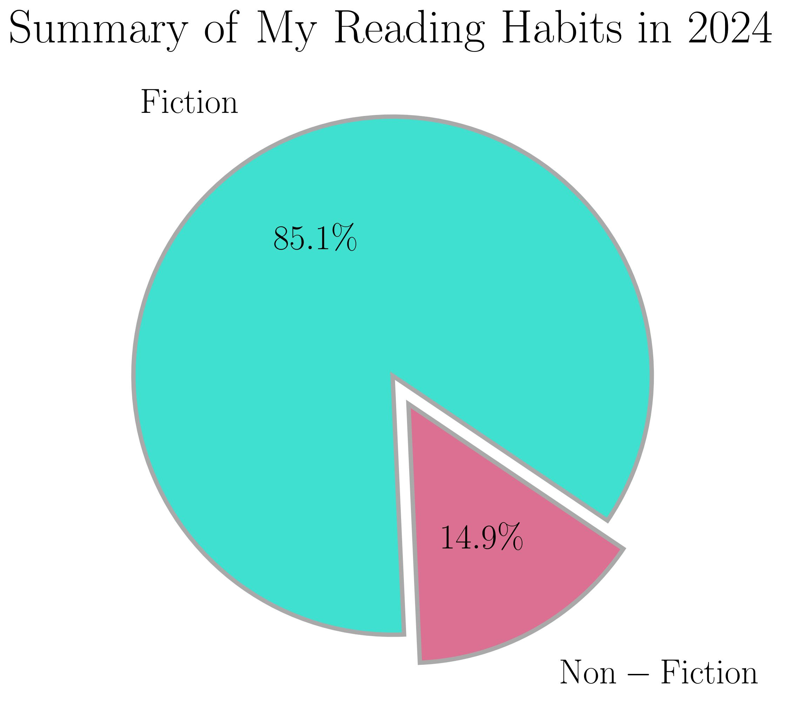

Blog
2024, A Year of Books in Review
January 2, 2025 · Review · Books · 2024 · ~72 min read
Link to My Year in Books on Goodreads.
I read lots of books in 2024 and tracked all of my progress on Goodreads. In this blog post, I will summarize the books that I read in 2024, starting with some infographics about my reading habits, followed by a ranked ordering of all the books that I read, and concluding with some of the best quotations from these books.
Before getting into these things, I want to discuss my reading journey. As a child, I was an avid reader, from pre-school up until the end of high school. At the age of 5, I was reading Harry Potter; at the age of 12, I was reading classic works of literature; at the age of 18, I was reading science books about the Universe. However, when I left home to go to college in 2017, my studies and research quickly consumed my life. I suffered tremendously as an undergraduate, both emotionally and mentally, and stopped reading as a result of this. It took everything in me to stay afloat and become successful. At the end of 2023, while a graduate student and doctoral candidate, I stopped spending as much of my time on social media and started reading again. This was one of the best decisions that I could have made. I continued spending as little of my time as possible on social media while replacing this time with reading. Reading has quickly become my favorite hobby and serves as an important escape from the anxiety and stress that is ever present and pervasive in my life. I hope my journey can serve as an inspiration to you...
Information Regarding My Reading Habits
In 2024, I read a total of 101 books from 49 unique authors. These 101 books contained a total of 39,443 pages, which suggests that my average book length was roughly 390.5 pages. For each of these 101 books, I provided a rating and wrote a review on Goodreads. I compiled the most relevant information for these 101 books in a Google spreadsheet. I subsequently analyzed my reading trends using the aforementioned spreadsheet and Python. My reading trends can be observed in the following infographics.




Ranked Ordering Of All The Books That I Read
- "Cat's Cradle" by Kurt Vonnegut Jr.
- "Project Hail Mary" by Andy Weir
- "Our Universe: An Astronomer's Guide" by Jo Dunkley
- "Slaughterhouse-Five" by Kurt Vonnegut Jr.
- "Invisible Man" by Ralph Ellison
- "Night" by Elie Wiesel
- "Stories of Your Life and Others" by Ted Chiang
- "Hyperion" by Dan Simmons
- "Children of Dune" by Frank Herbert
- "Welcome to the Monkey House" by Kurt Vonnegut Jr.
- "Golden Son" by Pierce Brown
- "The Elegant Universe: Superstrings, Hidden Dimensions, and the Quest for the Ultimate Theory" by Brian Greene
- "Bloodchild and Other Stories" by Octavia E. Butler
- "God Bless You, Mr. Rosewater" by Kurt Vonnegut Jr.
- "God Emperor of Dune" by Frank Herbert
- "Red Rising" by Pierce Brown
- "Catch-22" by Joseph Heller
- "The Fall of Hyperion" by Dan Simmons
- "Xenocide" by Orson Scott Card
- "Sapiens: A Brief History of Humankind" by Yuval Noah Harari
- "The Sirens of Titan" by Kurt Vonnegut Jr.
- "Man's Search for Meaning" by Viktor E. Frankl
- "A Clockwork Orange" by Anthony Burgess
- "The Rise of Endymion" by Dan Simmons
- "Deadeye Dick" by Kurt Vonnegut Jr.
- "Chapterhouse: Dune" by Frank Herbert
- "Less is More: How Degrowth Will Save the World" by Jason Hickel
- "Light Bringer" by Pierce Brown
- "Dark Matter" by Blake Crouch
- "Eldest" by Christopher Paolini
- "Brave New World" by Aldous Huxley
- "Heretics of Dune" by Frank Herbert
- "A Short History of Nearly Everything" by Bill Bryson
- "Animal Farm" by George Orwell
- "Endymion" by Dan Simmons
- "Recursion" by Blake Crouch
- "Life of Pi" by Yann Martel
- "Abaddon's Gate" by James S.A. Corey
- "Children of the Mind" by Orson Scott Card
- "Caliban's War" by James S.A. Corey
- "Network Effect" by Martha Wells
- "Eragon" by Christopher Paolini
- "Cosmos" by Carl Sagan
- "Cibola Burn" by James S.A. Corey
- "The Immortal Life of Henrietta Lacks" by Rebecca Skloot
- "Dungeon Crawler Carl" by Matt Dinniman
- "Leviathan Wakes" by James S.A. Corey
- "Brisingr" by Christopher Paolini
- "Ender in Exile" by Orson Scott Card
- "1984" by George Orwell
- "Because of Winn-Dixie" by Kate DiCamillo
- "A Brief History of Time" by Stephen Hawking
- "Bluebeard" by Kurt Vonnegut Jr.
- "The Left Hand of Darkness" by Ursula K. Le Guin
- "Ready Player One" by Ernest Cline
- "Dark Age" by Pierce Brown
- "While Mortals Sleep: Unpublished Short Fiction" by Kurt Vonnegut Jr.
- "The Last Command" by Timothy Zahn
- "All Systems Red" by Martha Wells
- "Iron Gold" by Pierce Brown
- "Mother Night" by Kurt Vonnegut Jr.
- "The Catcher in the Rye" by J.D. Salinger
- "The Andromeda Strain" by Michael Crichton
- "Of Mice and Men" by John Steinbeck
- "Player Piano" by Kurt Vonnegut Jr.
- "Heir to the Empire" by Timothy Zahn
- "The Mercy of Gods" by James S.A. Corey
- "Parable of the Sower" by Octavia E. Butler
- "Until the End of Time: Mind, Matter, and Our Search for Meaning in an Evolving Universe" by Brian Greene
- "Ready Player Two" by Ernest Cline
- "Exit Strategy" by Martha Wells
- "Morning Star" by Pierce Brown
- "Rogue Protocol" by Martha Wells
- "Jurassic Park" by Michael Crichton
- "Artificial Condition" by Martha Wells
- "Dark Force Rising" by Timothy Zahn
- "The Lost World" by Michael Crichton
- "11/22/63" by Stephen King
- "The Miraculous Journey of Edward Tulane" by Kate DiCamillo
- "The Demon-Haunted World: Science as a Candle in the Dark" by Carl Sagan
- "The Pearl" by John Steinbeck
- "The Great Gatsby" by F. Scott Fitzgerald
- "The Tale of Despereaux" by Kate DiCamillo
- "Breakfast of Champions" by Kurt Vonnegut Jr.
- "Contact" by Carl Sagan
- "Fahrenheit 451" by Ray Bradbury
- "Heaven's River" by Dennis E. Taylor
- "World War Z: An Oral History of the Zombie War" by Max Brooks
- "The Body: A Guide for Occupants" by Bill Bryson
- "Mostly Harmless" by Douglas Adams
- "The Alchemist" by Paulo Coelho
- "The Three-Body Problem" by Liu Cixin
- "Hocus Pocus" by Kurt Vonnegut Jr.
- "Neuromancer" by William Gibson
- "Do Androids Dream of Electric Sheep?" by Philip K. Dick
- "The Call of Cthulhu and Other Stories" by H.P. Lovecraft
- "Wampeters, Foma and Granfalloons" by Kurt Vonnegut Jr.
- "The Drawing of the Three" by Stephen King
- "Mere Christianity" by C.S. Lewis
- "The Gunslinger" by Stephen King
- "Desert Oracle: Volume 1: Strange True Tales from the American Southwest" by Ken Layne
Some Of My Favorite Quotations From All These Books
-
"Tiger got to hunt, bird got to fly; Man got to sit and wonder 'why, why, why?' Tiger got to sleep, bird go to land; Man got to tell himself he understand."
_This quotation is from "Cat's Cradle" by Kurt Vonnegut Jr._
-
"There is love enough in this world for everybody, if people will just look."
_This quotation is from "Cat's Cradle" by Kurt Vonnegut Jr._
-
"Of all the words of mice and men, the saddest are, 'It might have been.'"
_This quotation is from "Cat's Cradle" by Kurt Vonnegut Jr._
-
"Beware of the man who works hard to learn something, learns it, and finds himself no wiser than before... He is full of murderous resentment of people who are ignorant without having come by their ignorance the hard way."
_This quotation is from "Cat's Cradle" by Kurt Vonnegut Jr._
-
"In the beginning, God created the earth, and he looked upon it in His cosmic loneliness. And God said, 'Let Us make living creatures out of mud, so the mud can see what We have done.' And God created every living creature that now moveth, and one was man. Mud as man alone could speak. God leaned close as mud as man sat up, looked around, and spoke. Man blinked. 'What is the purpose of all this?' he asked politely. 'Everything must have a purpose?' asked God. 'Certainly,' said man. 'Then I leave it to you to think of one for all of this,' said God. And He went away."
_This quotation is from "Cat's Cradle" by Kurt Vonnegut Jr._
-
"Mass conversion. As the great Albert Einstein once said: E = mc^2. There's an absurd amount of energy in mass. A modern nuclear plant can power an entire city for a year with the energy stored in just one kilogram of Uranium. Yes. That's it. The entire output of a nuclear reactor for a year comes from a single kilogram of mass. Astrophage can, apparently, do this in either direction. It takes heat energy and somehow turns it into mass. Then when it wants the energy back, it turns that mass back into energy — in the form of Petrova-frequency light. And it uses that to propel itself along in space. So not only is it a perfect energy-storage medium, it's a perfect spaceship engine. Evolution can be insanely effective when you leave it alone for a few billion years..."
_This quotation is from "Project Hail Mary" by Andy Weir._
-
"ERN is going to release this paper next week. This is a rough draft. But I know everyone there, so they let me see an advance copy... They figured out how Astrophage stores energy... Long story short: It's neutrinos... It's very counterintuitive. But there's a large neutrino burst every time they kill an Astrophage. They even took samples to the IceCube Neutrino Observatory and punctured them in the main detector pool. They got a massive number of hits. Astrophage can only contain neutrinos if it's alive, and there's a lot of them in there... This is more your area than mine, but microbiologists have confirmed Astrophage has a lot of free hydrogen ions — raw protons with no electron — zipping around just inside the cell membrane... CERN is pretty sure that, through a mechanism we don't understand, when those protons collide at a high enough velocity, their kinetic energy is converted into two neutrinos with opposite momentum vectors... Sometimes gamma rays, when they pass close to an atomic nucleus, will spontaneously become an electron and a positron. It's called 'pair production.' So it's not unheard-of. But we've never seen neutrinos created that way... Astrophage makes neutrinos in pairs by slamming protons together. For the reaction to work, the protons need to collide with a higher kinetic energy than the mass energy of two neutrinos. If you work backward from the mass of a neutrino, you know the velocity those protons have to collide at. And when you know the velocity of particles in an object, you know its temperature. To have enough kinetic energy to make neutrinos, the protons have to be 96.415 degrees Celsius... Any heat energy above the critical temperature gets quickly converted into neutrinos. But if it drops below critical temperature, the protons are going too slow and neutrino production stop. End result: You can't get it hotter than 96.415 degrees. Not for long, anyway. And if it gets too cold, the Astrophage uses stored energy to heat back up to that temperature — just like any other warm-blooded life-form... Neutrinos are what's called Majorana particles. It means the neutrino is its own antiparticle. Basically, every time two neutrinos collide, it's a matter-antimatter interaction. They annihilate and become photons. Two photons, actually, with the same wavelength and going opposite directions... The mass energy of a neutrino is exactly the same as the energy found in one photon of Petrova-wavelength light. This paper is truly groundbreaking... Neutrinos routinely pass through the entire planet Earth without hitting a single atom — they're just that small. Well, it's more about quantum wavelengths and probabilities of collision. But suffice it to say, neutrinos are extremely hard to interact with. But for some reason, Astrophage has what we call 'super cross-sectionality.' That's just a fancy term meaning nothing can quantum-tunnel through it. It goes against every law of particle physics we thought we knew, but it's been proven over and over...**
_This quotation is from "Project Hail Mary" by Andy Weir._
-
"lanets get magnetic fields if the conditions are right. You have to have a molten-iron core, you have to be in the magnetic field of a star, and you have to be spinning. If all three of these things are the, you get a magnetic field. Earth has one — that's why compasses work. Erid has all of those features on steroids. They are larger than Earth with a larger iron core. They are close to their star, so they have a much stronger magnetic field powering their own field, and they spin extremely fast. All told, Erid's magnetic field is at least twenty-five times as strong as Earth's. Plus, their atmosphere is extremely thick. Twenty-nine times as thick. You know what strong magnetic fields and thick atmospheres are really good at? Radiation protection. All life on Earth evolved to deal with radiation. Our DNA has error-correction built in because we're constantly bombarded with radiation from the sun and from space in general. Our magnetic field and atmosphere protect us somewhat, but not 100 percent. For Erid, it's 100 percent. Radiation just doesn't get to the ground. Light doesn't even get to the ground — that's why they never evolved eyes. The surface is pitch-dark... Eridians are extremely susceptible to radiation, and they never even knew it existed...**
_This quotation is from "Project Hail Mary" by Andy Weir._
-
"We now take our final step outwards, arriving at the extraordinary viewpoint that takes in our entire observable universe. On this largest scale the universe appears as an intricate network of galaxy superclusters that together contain about 100 billion galaxies. Those galaxies are themselves huddled together throughout space in their smaller collections of clusters and galaxy groups. Each of those galaxies has around 100 billion stars, and a huge number of those stars will have their own systems of planets orbiting around them. With such numbers, it is no wonder that most astronomers suspect that life exists in some form elsewhere in the cosmos."
_This quotation is from "Our Universe: An Astronomer's Guide" by Jo Dunkley._
-
"What does our universe look like beyond the horizon? We think that it continues on, more or less the same, far beyond the part that we can see. We do not think it has an edge, an idea we will come back to in chapter 4. Perhaps the universe is infinite, as hard as that might be to visualize. However large it is, it most likely contains more of the same: more superclusters, containing more galaxies, containing more stars and planets. This might sound superficially boring, but with a moment's thought we can start to imagine what incredible richness and diversity there must be out there. How many galaxies, how many stars, how many planets — and how many of those might be hosts to life?"
_This quotation is from "Our Universe: An Astronomer's Guide" by Jo Dunkley._
-
"Returning now to our place in the universe, we locate ourselves on our small planet traveling around the Sun. Our Sun is surrounded in space by its neighboring stars, many of them encircled by their own tiny planets. Our neighboring stars move around in the longer spiraling arm of stars that makes up part of our larger home, the Milky Way galaxy. Our galaxy, a huge disc of stars and gas embedded in a much larger halo of invisible dark matter, is spinning gently around. We look out to our neighboring galaxy, the majestic spiraling Andromeda, slowly moving towards us through the depths of space. Around us there are many more galaxies, scattered through space and grouped together in smaller groups or larger clusters. Inside them, stars are born and die. Further out, we find more galaxies in their groups and clusters, as far as we can see. If we look far enough, we see them grouped into even larger structures, the megalopolis-like superclusters. The galaxies and clusters of galaxies are the bright lights on the backbone of the universe, the web of dark matter."
_This quotation is from "Our Universe: An Astronomer's Guide" by Jo Dunkley._
-
"'Billy looked at the clock on the gas stove. He had an hour to kill before the saucer came. He went into the living room, swinging the bottle like a dinner bell, turned on the television. He came slightly unstuck in time, saw the movie backwards, then forwards again. It was a movie about American bombers in the Second World War and the gallant men who flew them. Seen backwards by Billy, the story went like this: American planes, full of holes and wounded men and corpses took off backwards from an airfield in England. Over France, a few German fighter planes flew at them backwards, sucked bullets and shell fragments from some of the planes and crewmen. They did the same for wrecked American bombers on the ground, and those planes flew up backwards to join the formation. The formation flew backwards over a German city that was in flames. The bombers opened their bomb bay doors, exerted a miraculous magnetism which shrunk the fires, gathered them into cylindrical steel containers, and lifted the containers into the bellies of the planes. The containers were stored nearly in racks. The Germans below had miraculous devices of their own, which were long steel tubes. They used them to suck more fragments from the crewmen and planes. But there were still a few wounded Americans, though, and some of the bombers were in bad repair. Over France, though, German fighters came up again, made everything and everybody as good as new. When the bombers got back to their base, the steel cylinders were taken from the racks and shipped back to the United States of America, where factories were operating night and day, dismantling the cylinders, separating the dangerous contents into minerals. Touchingly, it was mainly women who did this work. The minerals were then shipped to specialists in remote areas. It was their business to put them into the ground, to hide them cleverly, so they would never hurt anybody ever again. The American fliers turned in their uniforms, became high school kids. And Hitler turned into a baby, Billy Pilgrim supposed. That wasn't in the movie. Billy was extrapolating. Everybody turned into a baby, and all humanity, without exception, conspired biologically to produce two perfect people named Adam and Eve, he supposed. Billy saw the war movies backward then forwards — and then it was time to go out onto his backyard to meet the flying saucer.''**
_This quotation is from "Slaughterhouse-Five" by Kurt Vonnegut Jr._
-
"'So it goes.''**
_This quotation is from "Slaughterhouse-Five" by Kurt Vonnegut Jr._
-
"'Everything was beautiful and nothing hurt.''**
_This quotation is from "Slaughterhouse-Five" by Kurt Vonnegut Jr._
-
"'How nice — to feel nothing, and still get full credit for being alive.''**
_This quotation is from "Slaughterhouse-Five" by Kurt Vonnegut Jr._
-
"'That is a very Earthling question to ask, Mr. Pilgrim. Why you? Why us for that matter? Why anything? Because this moment simply is. Have you ever seen bugs trapped in amber?... Well, here we are, Mr. Pilgrim, trapped in the amber of this moment. There is no why.''**
_This quotation is from "Slaughterhouse-Five" by Kurt Vonnegut Jr._
-
"'That's one thing Earthlings might learn to do, if they tried hard enough: ignore the awful times and concentrate on the good ones.''**
_This quotation is from "Slaughterhouse-Five" by Kurt Vonnegut Jr._
-
"I am an invisible man. No, I am not a spook like those who haunted Edgar Allan Poe, nor am I one of your Hollywood-movie ectoplasms. I am a man of substance, of flesh and bone, fiber and liquids — and I might even be said to possess a mind. I am invisible, understand, simply because people refuse to see me. Like the bodiless heads you see sometimes in circus sideshows, it is as though I have been surrounded by mirrors of hard, distorting glass. When they approach me they see only my surroundings, themselves, or figments of their imagination — indeed, everything and anything except me."
_This quotation is from "Invisible Man" by Ralph Ellison._
-
"And I knew that it was better to live out one's own absurdity than to die for that of others..."
_This quotation is from "Invisible Man" by Ralph Ellison._
-
"What and how much had I lost by trying to do only what was expected of me instead of what I myself had wished to do?"
_This quotation is from "Invisible Man" by Ralph Ellison._
-
"Somewhere beneath the load of the emotion-freezing ice which my life had conditioned my brain to produce, a spot of black anger glowed and threw off a hot red light of such intensity that had Lord Kelvin known of its existence, he would have had to revise his measurements."
_This quotation is from "Invisible Man" by Ralph Ellison._
-
"Never shall I forget that night, the first night in camp, that turned my life into one long night seven times sealed. Never shall I forget that smoke. Never shall I forget the small faces of the children whose bodies I saw transformed into smoke under a silent sky. Never shall I forget those flames that consumed my faith forever. Never shall I forget the nocturnal silence that deprived me for all eternity of the desire to live. Never shall I forget those moments that murdered my God and my soul and turned my dreams to ashes. Never shall I forget those things, even were I condemned to live as long as God himself. Never."
_This quotation is from "Night" by Elie Wiesel._
-
"My sensitivity to the body language of others has increased to the point that I can make these observations without sight or sound: I can smell the pheromones exuded by his skin. To an extent, my muscles can even detect the tension within his, perhaps by their electric field. These channels can't convey precise information, but the impressions I receive provide ample basis for extrapolations; they add texture to the web. Normal humans may detect these emanations subliminally. I'll work on becoming more attuned to them; then perhaps I can try consciously controlling my own expressions."
_This quotation is from "Stories of Your Life and Others" by Ted Chiang._
-
"Like a thousand hypodermic needles the light punctured his flesh and scraped across his bones. The light unmade his eyes, turning him into not a formerly sighted being, but a being never intended to possess vision. And in doing so the light revealed to Neil all the reasons he should love God. He loved Him with an utterness beyond what humans can experience for one another. To say it was unconditional was inadequate, because even the word 'unconditional' required the concept of a condition and such an idea was no longer comprehensible to him: every phenomenon in the universe was nothing less than an explicit reason to love Him. No circumstance could be an obstacle or even an irrelevancy, but only another reason to be grateful, a further inducement to love. Neil thought of the grief that had driven him to suicidal recklessness, and the pain and terror that Sarah had experienced before she died, and still he loved God, not in spite of their suffering, but because of it. He renounced all his previous anger and ambivalence and desire for answers. He was grateful for all the pain he'd endured, contrite for not previously recognizing it as the gift it was, euphoric that he was now being granted this insight into his true purpose. He understood how life was an undeserved bounty, how even the most virtuous were not worthy of the glories of the mortal plane. For him the mystery was solved, because he understood that everything in life is love, even pain, especially pain. So minutes later, when Neil finally bled to death, he was truly worthy of salvation. And God sent him to Hell anyway."
_This quotation is from "Stories of Your Life and Others" by Ted Chiang._
-
"In the beginning was the Word. Then came the fucking word processor. Then came the thought processor. Then came the death of literature. And so it goes."
_This quotation is from "Hyperion" by Dan Simmons._
-
"'Think of it this way,' said Helmholtz. 'Our aim is to make the world more beautiful than it was when we came into it. It can be done. You can do it.' A small cry of despair came from Jim Donnini. It was meant to be private, but it pierced every ear with its poignancy. 'How?' said Jim. 'Love yourself,' said Helmholtz, 'and make your instrument sing about it. A-one, a-two, a-three.' Down came his baton."
_This quotation is from "Welcome to the Monkey House" by Kurt Vonnegut Jr._
-
"I will die. You will die. We will all die and the universe will carry on without care. All that we have is that shout into the wind — how we live. How we go. And how we stand before we fall..."
_This quotation is from "Golden Son" by Pierce Brown._
-
"The meta-lesson of both relativity and quantum mechanics is that when we deeply probe the fundamental workings of the universe we may come upon aspects that are vastly different from our expectations. The boldness of asking deep questions may require unforeseen flexibility if we are to accept the answers."
_This quotation is from "The Elegant Universe: Superstrings, Hidden Dimensions, and the Quest for the Ultimate Theory" by Brian Greene._
-
"This is not a question born of idle philosophizing about why certain details happen to be one way instead of another; the universe would be a vastly different place if the properties of the matter and force particles were even moderately changed. For example, the existence of the stable nuclei forming the hundred or so elements of the periodic table hinges delicately on the ratio between the strengths of the strong and electromagnetic forces. The protons crammed together in atomic nuclei all repel one another electromagnetically; the strong force acting among their constituent quarks, thankfully, overcomes this repulsion and tethers the protons tightly together. But a rather small change in the relative strengths of these two forces would easily disrupt the balance between them, and would cause most atomic nuclei to disintegrate. Furthermore, were the mass of the electron a few times greater than it is, electrons and protons would tend to combine to form neutrons, gobbling up the nuclei of hydrogen (the simplest element in the cosmos, with a nucleus containing a single proton) and, again, disrupting the productions of more complex elements. Stars rely upon fusion between stable nuclei and would not form with such alterations to fundamental physics. The strength of the gravitational force also plays a formative role. The crushing density of matter in a star's central core powers its nuclear furnace and underlies the resulting blaze of starlight. If the strength of the gravitational force were increased, the stellar clump would bind more strongly, causing a significant increase in the rate of nuclear reactions. But just as a brilliant flare exhausts its fuel much faster than a slow-burning candle, an increase in the nuclear reaction rate would cause stars like the sun to burn out far more quickly, having a devastating effect on the formation of life as we know it. On the other hand, were the strength of the gravitational force significantly decreased, matter would not clump together at all, thereby preventing the formation of stars and galaxies. We could go on, but the idea is clear: the universe is the way it is because the matter and the force particles have the properties they do. But is there a scientific explanation for why they have these properties?"
_This quotation is from "The Elegant Universe: Superstrings, Hidden Dimensions, and the Quest for the Ultimate Theory" by Brian Greene._
-
"The second example in which general relativity flexes its muscle concerns the origin and evolution of the whole universe. As we have seen, Einstein showed that space and time respond to the presence of mass and energy. This distortion of space time affects the motion of other cosmic bodies moving in the vicinity of the resulting warps. In turn, the precise way in which these bodies move, by virtue of their own mass and energy, has a further affect on the warping of spacetime, which further affects the motion of the bodies, and on and on the interconnected cosmic dance goes. Through the equations of general relativity, equations rooted in geometrical insights into curved space spearheaded by the great nineteenth-century mathematician Georg Bernhard Riemann, Einstein was able to describe the mutual evolution of space, time, and matter quantitatively. To his great surprise, when the equations are applied behind an isolated context within the universe, such as a planet or a comet orbiting a star, to the universe as a whole, a remarkable conclusion is reached: the overall size of the spatial universe must be changing in time. That is, either the fabric of the universe is stretching or it is shrinking, but it is not simply staying put. The equations of general relativity show this explicitly. This conclusion was too much even for Einstein. He had overturned the collective intuition regarding the nature of space and time built up through everyday experiences over thousands of years, but the notion of an always existing, never changing universe was too ingrained for even this radial thinker to abandon... However, 12 years later, through detailed measurements of distant galaxies, the American astronomer Edwin Hubble experimentally established that the universe is expanding... In fact, in the early 1920s — years before Hubble's measurements — the Russian meteorologist Alexander Friedmann had used Einstein's original equations to show, in some detail, that all galaxies would be carried along on the substrate of stretching spatial fabric, thereby speedily moving away from all others... If the fabric of space is stretching, thereby increasing the distance between galaxies that are carried along on the cosmic flow, we can imagine running the evolution backward in time to learn about the origin of the universe. In reverse, the fabric of space shrinks, bringing all galaxies closer and closer to each other. Like the contents of a pressure cooker, as the shrinking universe compresses the galaxies together, the temperature dramatically increases, stars disintegrate and a hot plasma of matter's elementary constituents is formed. As the fabric continues to shrink, the temperature rises unabated, as does the density of the primordial plasma. As we imagine running the clock backward from the age of the presently observed universe, [about 13.7 billion years], the universe as we know it is crushed to an ever smaller size... Extrapolating all the way back to 'the beginning,' the universe would appear to have begun as a point in which all matter and energy is squeezed together to unimaginable density and temperature. It is believed that a cosmic fireball, the big bang, erupted from this volatile mixture spewing forth the seeds from which the universe as we know it evolved. The image of the big bang as a cosmic explosion ejecting the material contents of the universe like shrapnel from an exploding bomb is a useful one to bear in mind, but it is a little misleading... Instead, the big bang is the eruption of compressed space whose unfurling, like a tidal wave, carries along matter and energy even to this day..."
_This quotation is from "The Elegant Universe: Superstrings, Hidden Dimensions, and the Quest for the Ultimate Theory" by Brian Greene._
-
"This is such a deep and important point that we say it once again, with feeling. According to string theory, the universe is made up of tiny strings whose resonant patterns of vibration are the microscopic origin of particle masses and force charges. String theory also requires extra space dimensions that must be curled up to a very small size to be consistent with our never having seen them. But a tiny string can probe a tiny space. As a string moves about, oscillating as it travels, the geometrical form of the extra dimensions plays a critical role in determining resonant patterns of vibration. Because the patterns of string vibrations appear to us as the masses and charges of the elementary particles, we conclude that these fundamental properties of the universe are determined, in large measure, by the geometrical size and shape of the extra dimensions. That's one of the most far-reaching insights of string theory."
_This quotation is from "The Elegant Universe: Superstrings, Hidden Dimensions, and the Quest for the Ultimate Theory" by Brian Greene._
-
"As we fix our sight on the future and anticipate all the wonders yet in store for us, we should also reflect back and marvel at the journey we have taken so far. The search for the fundamental laws of the universe is a distinctly human drama, one that has stretched the mind and enriched the spirit. Einstein's vivid description of his own quest to understand gravity — 'the years of anxious searching in the dark, with their intense longing, their alternations of confidence and exhaustion, and final emergence into the light' — encompasses, surely, the whole human struggle. We are all, each in our own way, seekers of the truth and we each long for an answer to why we are here. As we collectively scale the mountain of explanation, each generation stands firmly on the shoulders of the previous, bravely reaching for the peak. Whether any of our descendants will ever take in the view from the summit and gaze out on the vast and elegant universe with a perspective of infinite clarity, we cannot predict. But as each generation climbs a little higher, we realize Jacob Bronowski's pronouncement that 'in every age there is a turning point, a new way of seeing and asserting the coherence of the world.' And as our generation marvels at our new view of the universe — our new way of asserting the world's coherence — we are fulfilling our part, contributing our ring to the human ladder reaching for the stars."
_This quotation is from "The Elegant Universe: Superstrings, Hidden Dimensions, and the Quest for the Ultimate Theory" by Brian Greene._
-
"I think... that everyone has something that they can do better than they can do anything else. It's up to them to find out what that something is."
_This quotation is from "Bloodchild and Other Stories" by Octavia E. Butler._
-
"If you work hard enough at something that doesn't matter, you can forget for a while about the things that do."
_This quotation is from "Bloodchild and Other Stories" by Octavia E. Butler._
-
"It mattered more than I know how to tell you that this time my tormentors were my own people. They were human. They spoke my language. They knew all that I knew about pain and humiliation and fear and despair. They knew what they were doing to me, and yet it never occurred to them not to do it."
_This quotation is from "Bloodchild and Other Stories" by Octavia E. Butler._
-
"Hello, babies. Welcome to Earth. It's hot in the summer and cold in the winter. It's round and wet and crowded. At the outside, babies, you've got about a hundred years here. There's only one rule that I know of, babies — God damn it, you've got to be kind."
_This quotation is from "God Bless You, Mr. Rosewater" by Kurt Vonnegut Jr._
-
"And Samuel bought newspapers, and preachers, too. He gave them this simple lesson to teach, and they taught it well: Anybody who thought that the United States of America was supposed to be a Utopia was a piggy, lazy, God-damned fool. Samuel thundered that no American factory hand was worth more than eighty cents a day. And yet he could be thankful for the opportunity to pay a hundred thousand dollars or more for a painting by an Italian three centuries dead. And he capped this insult by giving paintings to museums for the spiritual elevation of the poor. The museums were closed on Sundays."
_This quotation is from "God Bless You, Mr. Rosewater" by Kurt Vonnegut Jr._
-
"When the United States of America, which was meant to be a Utopia for all, was less than a century old, Noah Rosewater and a few men like him demonstrated the folly of the Founding Fathers in one respect: those sadly recent ancestors had not made it the law of the Utopia that the wealth of each citizen should be limited. This oversight was engendered by a weak-kneed sympathy for those who loved expensive things, and by the feeling that the continent was so vast and valuable, and the population so thin and enterprising, that no thief, no matter how fast he stole, could more than mildly inconvenience anyone... Thus did a handful of rapacious citizens come to control all that was worth controlling in America. Thus was the savage and stupid and entirely inappropriate and unnecessary and humorless American class system created. Honest, industrious, peaceful citizens were classed as bloodsuckers, if they asked to be paid a living wage. And they saw that praise was reserved henceforth for those who devised means of getting paid enormously for committing crimes against no laws had been passed. Thus the American dream turned belly up, turned green, bobbed to the scummy surface of cupidity unlimited, filled with gas, went bang in the noonday sun."
_This quotation is from "God Bless You, Mr. Rosewater" by Kurt Vonnegut Jr._
-
"It is difficult to live in the present, pointless to live in the future and impossible to live in the past."
_This quotation is from "God Emperor of Dune" by Frank Herbert._
-
"Men cannot be freed by the same injustice that enslaved it."
_This quotation is from "Red Rising" by Pierce Brown._
-
"It was love at first sight. The first time Yossarian saw the chaplain he fell madly in love with him. Yossarian was in the hospital with a pain in his liver that fell just short of being jaundice. The doctors were puzzled by the fact that it wasn't quite jaundice. If it became jaundice they could treat it. If it didn't become jaundice and went away they could discharge him. But this just being short of jaundice all the time confused them."
_This quotation is from "Catch-22" by Joseph Heller._
-
"There was only one catch and that was Catch-22, which specified that a concern for one's own safety in the face of dangers that were real and immediate was the process of a rational mind. Orr was crazy and could be grounded. All he had to do was ask; and as soon as he did, he would no longer be crazy and would have to fly more missions. Orr would be crazy to fly more missions and sane if he didn't, but if he was sane he had to fly them. If he flew them he was crazy and didn't have to; but if he didn't want to he was sane and had to. Yossarian was moved very deeply by the absolute simplicity of this clause of Catch-22 and let out a respectful whistle. 'That's some catch, that Catch-22,' he observed. 'It's the best there is,' Doc Daneeka agreed."
_This quotation is from "Catch-22" by Joseph Heller._
-
"The chaplain had sinned, and it was good. Common sense told him that telling lies and defecting from duty were sins. On the other hand, everyone knew that sin was evil and that no good could come from evil. But he did feel good; he felt positively marvelous. Consequently, it followed logically that telling lies and defecting from duty could not be sins. The chaplain had mastered, in a moment of divine intuition, the handy technique of protective rationalization, and he was exhilarated to turn vice into virtue and slander into truth, impotence into abstinence, arrogance into humility, plunder into philanthropy, thievery into honor, blasphemy into wisdom, brutality into patriotism, and sadism into justice. Anybody could do it; it required no brains at all. It merely required no character."
_This quotation is from "Catch-22" by Joseph Heller._
-
"Abraham came not to sacrifice, but to know once and for all whether this God was a god to be trusted and obeyed. No other test would do."
_This quotation is from "The Fall of Hyperion" by Dan Simmons._
-
"About 70,000 years ago, organisms belonging to the species Homo sapiens started to form even more elaborate structures called cultures. The subsequent development of these human cultures is called history. Three important revolutions shaped the course of history: the Cognitive Revolution kick-started history about 70,000 years ago. The Agricultural Revolution sped it up about 12,000 years ago. The Scientific Revolution, which got under way only 500 years ago, may well end history and start something completely new. This book tells the story of how these three revolutions have affected humans and their fellow organisms."
_This quotation is from "Sapiens: A Brief History of Humankind" by Yuval Noah Harari._
-
"Another important sect is socialist humanism. Socialist believe that 'humanity' is collective rather than individualistic. They hold as sacred not the inner voice of each individual, but the species Homo sapiens as a whole. Whereas liberal humanism seeks as much freedom as possible for individual humans, socialist humanism seeks equality between all humans. According to socialists, inequality is the worst blasphemy against the sanctity of humanity, because it privileges peripheral qualities of humans over their universal essence. For example, when the rich are privileged over the poor, it means that we value money more than the universal essence of all humans, which is the same for rich and poor alike."
_This quotation is from "Sapiens: A Brief History of Humankind" by Yuval Noah Harari._
-
"This may not strike you as very original, because we all live in a capitalist world that takes Smith's argument for granted. We hear variations on this theme every day in the news. Yet Smith's claim that the selfish human urge to increase private profits is the basis for collective wealth is one of the most revolutionary ideas in human history — revolutionary not just from an economic perspective, but even more so from a moral and political perspective. What Smith says is, in fact, that greed is good, and that by becoming richer I benefit everybody, not just myself. Egoism is altruism. Smith taught people to think about the economy as a 'win-win situation,' in which my profits are also your profits. Not only can we both enjoy a bigger slice of pie at the same time, but the increase in your slice depends upon the increase in my slice. If I am poor, you too will be poor since I cannot buy your products or services. If I am rich, you too will be enriched since you can now sell me something. Smith denied the traditional contradiction between wealth and morality, and threw open the gates of heaven for the rich. Being rich meant being moral. In Smith's story, people become rich not by despoiling their neighbors, but by increasing the overall size of the pie. And when the pie grows, everyone benefits. The rich are accordingly the most useful and benevolent people in society, because they turn the wheels of growth for everyone's advantage."
_This quotation is from "Sapiens: A Brief History of Humankind" by Yuval Noah Harari._
-
"According to Buddhism, the root of suffering is neither the feeling of pain nor of sadness nor even of meaninglessness. Rather, the real root of suffering is this never-ending and pointless pursuit of ephemeral feelings, which causes us to be in a constant state of tension, restlessness and dissatisfaction. Due to this pursuit, the mind is never satisfied. Even when experiencing pleasure, it is not content, because it fears this feeling might disappear, and craves that this feeling should stay and intensify. People are liberated from suffering not when they experience this or that fleeting pleasure, but rather when they understand the impermanent nature of all their feelings, and stop craving them. This is the aim of Buddhist meditation practices. In meditation, you are supposed to closely observe your mind and body, witness the ceaseless arising and passing of your feelings, and realize how pointless it is to pursue them. When the pursuit stops, the mind becomes very relaxed, clear and satisfied."
_This quotation is from "Sapiens: A Brief History of Humankind" by Yuval Noah Harari._
-
"It took us that long to realize that a purpose of human life, no matter who is controlling it, is to love whoever is around to be loved."
_This quotation is from "The Sirens of Titan" by Kurt Vonnegut Jr._
-
"You go up to a man, and you say, 'How are things going, Joe?' And he says, 'Oh, fine, fine — couldn't be better.' And you look into his eyes, and you see things really couldn't be much worse. When you get right down to it, everybody's having a perfectly lousy time of it, and I mean everybody. And the hell of it is, nothing seems to help much."
_This quotation is from "The Sirens of Titan" by Kurt Vonnegut Jr._
-
"Oh Lord Most High, Creator of the Cosmos, Spinner of Galaxies, Soul of Electromagnetic Waves, Inhaler and Exhaler of Inconceivable Volumes of Vacuum, Spitter of Fire and Rock, Trifler with Millenia — what could we do for Thee that Thou couldst not do for Thyself one octillion times better? Nothing. What could we do or say that could possible interest Thee? Nothing. Oh, Mankind, rejoice in the apathy of our Creator, for it makes us free and truthful and dignified at last. No longer can a fool like Malachi Constant point to a ridiculous accident of good luck and say, 'Somebody up there likes me.' And no longer can a tyrant say, 'God wants this or that to happen, and anybody who doesn't help this or that to happen is against God.' O Lord Most High, what a glorious weapon is Thy Apathy, for we have unsheathed it, have thrust and slashed mightily with it, and the claptrap that has so often enslaved us or driven us into the madhouse lies slain!"
_This quotation is from "The Sirens of Titan" by Kurt Vonnegut Jr._
-
"For the world is in a bad state, but everything will become still worse unless each of us does his best."
_This quotation is from "Man's Search for Meaning" by Viktor Frankl._
-
"Why, then, do some people find themselves feeling so empty? Frankl's wisdom here is worth emphasizing: It is a question of the attitude one takes toward life's challenges and opportunities, both large and small. A positive attitude enables a person to endure suffering and disappointment as well as enhance enjoyment and satisfaction. A negative attitude intensifies pain and deepens disappointments; it undermines and diminishes pleasure, happiness, and satisfaction; it may even lead to depression or physical illness."
_This quotation is from "Man's Search for Meaning" by Viktor Frankl._
-
"Love is the only way to grasp another human being in the innermost core of his personality. No one can become fully aware of the very essence of another human being unless he loves him. By his love he is enabled to see the essential traits and features in the beloved person; and even more, he sees that which is potential in him, which is not yet actualized but yet ought to be actualized. Furthermore, by his love, the loving person enables the beloved person to actualize these potentialities. By making him aware of what he can be and of what he should become, he makes these potentialities come true."
_This quotation is from "Man's Search for Meaning" by Viktor Frankl._
-
"As for the actual causation of neuroses, apart from constitutional elements, whether somatic or psychic in nature, such feedback mechanisms as anticipatory anxiety seem to be a major pathogenic factor. A given symptom is responded to by a phobia, the phobia triggers the symptom, and the symptom, in turn, reinforces the phobia. A similar chain of events, however, can be observed in obsessive-compulsive cases in which the patient fights the ideas which haunt him. Thereby, however, he increases their power to disturb him, since pressure precipitates counter pressure. Again the symptom is reinforced! On the other hand, as soon as the patient stops fighting his obsessions and instead tries to ridicule them by dealing with them in an ironical way — by applying paradoxical intention — the vicious circle is cut, the symptom diminishes and finally atrophies. In the fortunate case where there is no existential vacuum which invites and elicits the symptom, the patient will not only succeed in ridiculing his neurotic fear but finally will succeed in completing ignoring it."
_This quotation is from "Man's Search for Meaning" by Viktor Frankl._
-
"Well if it isn't fat stinking billygoat Billyboy in poison. How art thou, thou globby bottle of cheap stinking chip-oil? Come and get one on the yarbles, if you have any yarbles, you eunuch jelly, thou."
_This quotation is from "A Clockwork Orange" by Anthony Burgess._
-
"What's it going to be then, eh?"
_This quotation is from "A Clockwork Orange" by Anthony Burgess._
-
"The question is whether such a technique can really make a man good. Goodness comes from within... Goodness is something chosen. When a man cannot choose he ceases to be a man."
_This quotation is from "A Clockwork Orange" by Anthony Burgess._
-
"It may not be nice to be good... It may be horrible to be good. And when I say that to you I realize how self-contradictory that sounds. I know I shall have many sleepless nights about this. What does God want? Does God want goodness or the choice of goodness? Is a man who chooses the bad perhaps in some way better than a man who has the good imposed upon him?"
_This quotation is from "A Clockwork Orange" by Anthony Burgess._
-
"The cruciform — a sort of organic computer in which is stored the neurological and physiological data of a living human being — restored the body but not the full intellect or personality. It resurrected the corpse but stole the soul."
_This quotation is from "The Rise of Endymion" by Dan Simmons._
-
"I am that mix. I bring the genetic ability to access the Void from the TechnoCore and the too-seldom-used human ability to perceive the universe through empathy. For better or worse, those who drink of my blood shall never see the world or the universe the same again... There is no guarantee of happiness, wisdom, or long life if you drink of me this evening... There is no nirvana. There is no salvation. There is no afterlife. There is no rebirth. There is only immense knowledge — of the heart as well as the mind — and the potential for great discoveries, great adventures, and a guarantee of more of the pain and terror that make up so much of our short lives."
_This quotation is from "The Rise of Endymion" by Dan Simmons._
-
"Planck space, the Void Which Binds, is a multidimensional medium with its own reality and — as the Core was soon to learn — its own topography. The Hawking drive was not and is not a drive at all, in the classic sense, but an entry device which touches on Planck-space topography just long enough to change coordinates in the four-dimensional space/time continuum. Farcaster portals, on the other hand, allow actual entry to the Void Which Binds. To humans, the reality was obvious — step through a hole in space/time here, exit instantaneously via another farcaster hole there. My Uncle Martin had a farcaster home with adjoining rooms on dozens of different worlds. Farcasters created the Hegemony's WorldWeb. Another invention, the fatline — a faster-than-light communications medium — allowed for instantaneous communication between star systems. All the prerequisites for interstellar society had been met."
_This quotation is from "The Rise of Endymion" by Dan Simmons._
-
"To lose all this forever is the essence of being human, my love."
_This quotation is from "The Rise of Endymion" by Dan Simmons._
-
"To the as-yet-unborn, to all innocent wisps of undifferentiated nothingness: Watch out for life. I have caught life. I have come down with life. I was a wisp of undifferentiated nothingness, and then a little peephole opened quite suddenly. Light and sound poured in. Voices began to describe me and my surroundings. Nothing they said could be appealed. They said I was a boy named Rudolph Waltz, and that was that. They said the year was 1932, and that was that. They said I was in Midland City, Ohio, and that was that. They never shut up. Year after year they piled detail upon details. They do it still. You know what they say now? They say the year is 1982, and that I am fifty years old. Blah blah blah."
_This quotation is from "Deadeye Dick" by Kurt Vonnegut Jr._
-
"That is my principal objection to life, I think: It is too easy, when alive, to make perfectly horrible mistakes."
_This quotation is from "Deadeye Dick" by Kurt Vonnegut Jr._
-
"Thinking you know why you behave as you do gives you all sorts of excuses for extraordinary behavior."
_This quotation is from "Chapterhouse: Dune" by Frank Herbert._
-
"Power attracts the corruptible."
_This quotation is from "Chapterhouse: Dune" by Frank Herbert._
-
"The best art imitates life in a compelling way."
_This quotation is from "Chapterhouse: Dune" by Frank Herbert._
-
"This is not a book about doom. It is a book about hope. It's about how we can shift from an economy that's organized around domination and extraction to one that's rooted in reciprocity with the living world. But before we begin that journey, it's important that we grasp what's at stake. The ecological crisis happening around us is much more serious than we generally assume. It's not just one or two discrete issues, something that could be solved with a targeted intervention here and there while everything else carries on as normal. What's happening is the breakdown of multiple, interconnected systems — systems on which human beings are fundamentally dependent. If you're already familiar with what's going on, you may want to skim over this part. If not, brace yourself. It's not just the insects..."
_This quotation is from "Less is More: How Degrowth Will Save the World" by Jason Hickel._
-
"The essential point to grasp here is that the emergence of the extraordinary productive capacity that characterizes capitalism depended on creating and maintaining conditions of artificial scarcity. Scarcity — and the threat of hunger — served as the engine of capitalist growth. The scarcity was artificial in the sense that there was no actual depletion of resources: all the same land and forests and water remained, just as they always had, but people's access to them was suddenly restricted. Scarcity was created, then, in the very process of elite accumulation. And it was enforced by state violence, with peasants massacred wherever they found the courage to tear down the barriers that cut them off from the land."
_This quotation is from "Less is More: How Degrowth Will Save the World" by Jason Hickel._
-
"Over and over again, the empirical evidence shows that it is possible to achieve high levels of human development without high levels of GDP. According to data from the UN, it is possible for nations to reach the very highest category on the life expectancy index with as little as ＄8,000 per capita, and very high levels on the education index with as little as ＄9,000 per capita. In fact, nations can succeed in a wide range of key social indicators — not just health and education, but also employment, nutrition, social support, democracy and life satisfaction — with as little as ＄10,000 per capita, while saying within or near planetary boundaries. What's remarkable about these figures is that they are less than world average GDP per capita (＄11,300). In other words, in theory we could achieve all of these social goals, for every person in the world, without any additional GDP growth at all, simply by investing in public goods, and distributing income and opportunity more fairly."
_This quotation is from "Less is More: How Degrowth Will Save the World" by Jason Hickel._
-
"In other words, degrowth — reducing material and energy use — is an ecologically coherent solution to a multi-faceted crisis. And the good news is that we can do this without any negative impact on human welfare. In fact, we can do it while improving people's lives. How is that possible? The key is to remember that capitalism is a system that's organized around exchange-value, not around use-value. Production is geared primarily toward accumulating profit rather than toward satisfying human needs. In fact, in a growth-oriented system, the goal is quite often to avoid satisfying human needs, and even to perpetuate need itself. Once we understand this, it becomes clear that there are huge chunks of the economy that are actively and intentionally wasteful, and which do not serve any recognizable human purpose."
_This quotation is from "Less is More: How Degrowth Will Save the World" by Jason Hickel._
-
"I was born too late to explore the seas, and I am too wicked to explore heaven, so the stars will have to do."
_This quotation is from "Light Bringer" by Pierce Brown._
-
"Experimental physics — hell, all of science — is about solving problems. However, you can't solve them all at once. There's always a larger, overarching question — the big target. But if you obsess on the sheer enormity of it, you lose focus. The key is to start small. Focus on solving problems you can answer. Build some dry ground to stand on. And after you've put in the work, and if you're lucky, the mystery of the overarching question becomes knowable. Like stepping slowly back from a photomontage to witness the ultimate image revealing itself."
_This quotation is from "Dark Matter" by Blake Crouch._
-
"The Many-Worlds interpretation of quantum mechanics posits that all possible realities exist. That everything which has a probability of happening is happening. Everything that might have occurred in our past did occur, only in another universe. What if that's true? What if we live in a fifth-dimensional probability space? What if we actually inhabit the multiverse, but our brains have evolved in such a way as to equip us with a firewall that limits what we perceive to a single universe? One worldline. The one we choose, moment to moment. It makes sense if you think about it. We couldn't possibly contend with simultaneously observing all possible realities at once. So how do we access this 5-D probability space? And if we could, where would it take us?"
_This quotation is from "Dark Matter" by Blake Crouch._
-
"When will I finally know who and what I am?"
_This quotation is from "Eldest" by Christopher Paolini._
-
"Saphira hummed deep in her throat: I have no answers either. Life is both pain and pleasure. If this is the price you must pay for the hours you enjoy, is it too much?"
_This quotation is from "Eldest" by Christopher Paolini._
-
"You confuse the issue. All I wanted to know was the most useful tool a person can have, regardless of whether that person is good or evil. I agree that it's important to be of a virtuous nature, but I would also contend that if you had to choose between giving a man a noble disposition or teaching him to think clearly, you'd do better to teach him to think clearly. Too many problems in this world are caused by men with noble dispositions and clouded minds. History provides us with numerous examples of people who were convinced that they were doing the right thing and committed terrible crimes because of it. Keep in mind, Eragon, that no one thinks of himself as a villain, and few make decisions they think are wrong. A person may dislike his choice, but he will stand by it because, even in the worst circumstances, he believes that it was the best option available to him at the time. On its own, being a decent person is no guarantee that you will act well, which brings us back to the one protection we have against demagogues, tricksters, and the madness of crowds, and our surest guide through the uncertain shoals of life: clear and reasoned thinking. Logic will never fail you, unless you're unaware of — or deliberately ignore — the consequences of your deeds."
_This quotation is from "Eldest" by Christopher Paolini._
-
"We believe that the world behaves according to certain inviolable rules and that, by persistent effort, we can discover those rules and use them to predict events when circumstances repeat... I cannot prove that gods do not exist. Nor can I prove that the world and everything in it was not created by an entity or entities in the distant past. But I can tell you that in the millennia we elves have studied nature, we have never witnessed an instance where the rules that govern the world have been broken. That is, we have never seen a miracle. Many events have defied our ability to explain, but we are convinced that we failed because we are still woefully ignorant about the universe and not because a deity altered the workings of nature... We give credence only to that which we can prove exists. Since we cannot find evidence that gods, miracles, and other supernatural things are real, we do not trouble ourselves about them... It is a better world. A place where we are responsible for our own actions, where we can be kind to one another because we want to and because it is the right thing to do instead of being frightened into behaving by the threat of divine punishment. I won't tell you what to believe, Eragon. It is far better to be taught to think critically and then be allowed to make your own decisions than to have someone else's notions thrust upon you. You asked after our religion, and I have answered you true. Make of it what you will."
_This quotation is from "Eldest" by Christopher Paolini._
-
"I am I, and I wish I weren't."
_This quotation is from "Brave New World" by Aldous Huxley._
-
"A gram is always better than a damn."
_This quotation is from "Brave New World" by Aldous Huxley._
-
"But I don't want comfort. I want God, I want poetry, I want real danger, I want freedom, I want goodness. I want sin."
_This quotation is from "Brave New World" by Aldous Huxley._
-
"Imagination! Here, you learn what it is to be human. You are a creator of order, of beautiful shapes and systems, an organizer of chaos."
_This quotation is from "Heretics of Dune" by Frank Herbert._
-
"At the quantum level our universe can be seen as an indeterminate place, predictable in a statistical way only when you employ large enough numbers. Between that universe and a relatively predictable one where the passage of a single planet can be timed to a picosecond, other forces come into play. For the in-between universe where we find our daily lives, that which you believe is a dominant force. Your beliefs order the unfolding of daily events. If enough of us believe, a new thing can be made to exist. Belief structure creates a filter through which chaos is sifted into order."
_This quotation is from "Heretics of Dune" by Frank Herbert._
-
"If this book has a lesson, it is that we are awfully lucky to be here — and by 'we' I mean every living thing. To attain any kind of life in this universe of ours appears to be quite an achievement. As humans we are doubly lucky, of course: We enjoy not only the privilege of existence but also the singular ability to appreciate it and even, in a multitude of ways, to make it better. It is a talent we have only barely begun to grasp. We have arrived at this position of eminence in a stunningly short time. Behaviorally modern human beings — that is, people who can speak and make art and organize complex activities — have existed for only about 0.0001 percent of Earth's history. But surviving for even that little while has required a nearly endless string of good fortune. We really are at the beginning of it all. The trick, of course, is to make sure we never find the end. And that, almost certainly, will require a good deal more than lucky breaks."
_This quotation is from "A Short History of Nearly Everything" by Bill Bryson._
-
"Whatever prompted life to begin, it happened just once. This is the most extraordinary fact in biology, perhaps the most extraordinary fact we know. Everything that has ever lived, plant or animal, dates its beginnings from the same primordial twitch. At some point in an unimaginably distant past some little bags of chemicals fidgeted to life. It absorbed some nutrients, gently pulsed, had a brief existence. This much may have happened before, perhaps many times. But this ancestral packet did something additional and extraordinary: it cleaved itself and produced an heir. A tiny bundle of genetic material passed from one living entity to another, and has never stopped moving since. It was the moment of creation for us all. Biologists call it the Big Birth."
_This quotation is from "A Short History of Nearly Everything" by Bill Bryson._
-
"In a single blinding pulse, a moment of glory much too swift and expansive for any form of words, the singularity assumes heavenly dimensions, space beyond conception. In the first lively second (a second that many cosmologists will devote careers to shaving into ever-finer wafers) is produced gravity and the other forces that govern physics. In less than a minute the universe is a million billion miles across and growing fast. There is a lot of heat now, ten billion degrees of it, enough to begin the nuclear reactions that create the lighter elements — principally hydrogen and helium, with a dash (about one atom in a hundred million) of lithium. In three minutes, 98 percent of all the matter there is or will ever be has been produced. We have a universe. It is a place of the most wondrous and gratifying possibility, and beautiful, too. And it was all done in about the time it takes to make a sandwich."
_This quotation is from "A Short History of Nearly Everything" by Bill Bryson._
-
"His name was Albert Einstein, and in [1905] he submitted to Annalen der Physik five papers, of which three, according to C. P. Snow, 'were among the greatest in the history of physics' — one examine the photoelectric effect by means of Planck's new quantum theory, one on the behavior of small particles in suspension (what is known as Brownian motion), and one outlining a special theory of relativity, The first won its author a Nobel Prize and explained the nature of light (and also helped to make television possible, among other things). The second provided proof that atoms do indeed exist — a fact that had, surprisingly, been in some dispute. The third merely changed the world..."
_This quotation is from "A Short History of Nearly Everything" by Bill Bryson._
-
"All animals are equal. But some animals are more equal than others."
_This quotation is from "Animal Farm" by George Orwell._
-
"Twelve voices were shouting in anger, and they were all alike. No question now, what had happened to the faces of the pigs. The creatures outside looked from pig to man, and from man to pig, and from pig to man again; but already it was impossible to say which was which."
_This quotation is from "Animal Farm" by George Orwell._
-
"If love is the answer, what was the question?"
_This quotation is from "Endymion" by Dan Simmons._
-
"You were beautiful. I loved you then. I loved you backward and forward in time. I loved you beyond boundaries of time and space."
_This quotation is from "Endymion" by Dan Simmons._
-
"... So tell me about the present. How wide is it? How deep is it? How much is mine to keep?"
_This quotation is from "Endymion" by Dan Simmons._
-
"And he wonders — is deja vu actually the specter of false timelines that never happened but did, casting their shadows upon reality?"
_This quotation is from "Recursion" by Blake Crouch._
-
"Is this what you want? To drop yourself into a still-life painting of a memory because life has broken your heart? For so many lifetimes, he lived in a state of perpetual regret, returning obsessively and destructively to better times, to moments he wished he could change. Most of those lives he lived staring into the rearview mirror... The thought comes almost like a prayer — I don't want to look back anymore. I'm ready to accept that my existence will sometimes contain pain. No more trying to escape, either through nostalgia or a memory chair. They're both the same fucking thing. Life with a cheat code isn't life. Our existence isn't something to be engineered or optimized for the avoidance of pain. That's what it is to be human — the beauty and the pain, each meaningless without the other."
_This quotation is from "Recursion" by Blake Crouch._
-
"What is the Schwarzschild radius of a memory? A wild notion... When we die, does the immense gravity of our collapsing memories create a micro black hole? A wilder notion... Does the memory-reactivation procedure — at the moment of death — then open a wormhole that connects our consciousness to an earlier version of ourselves?"
_This quotation is from "Recursion" by Blake Crouch._
-
"If you stumble about believability, what are you living for? Love is hard to believe, ask any lover. Life is hard to believe, ask any scientist. God is hard to believe, ask any believer. What is your problem with hard to believe?"
_This quotation is from "Life of Pi" by Yann Martel._
-
"There are no souls... We are bags of meat with a little electricity running through them. No ghosts, no spirits, no souls. The only thing that survives is the story people tell about you. The only thing that matters is your name..."
_This quotation is from "Abaddon's Gate" by James S.A. Corey._
-
"If he was sad about anything, it was that everything that was in motion now would keep on being in motion without him, and he'd never know how it went. Never know if anything he'd done had made a difference.."
_This quotation is from "Abaddon's Gate" by James S.A. Corey._
-
"Our best analysis is that the Ring is an artificially sustained Einstein-Rosen bridge. You go through the Ring, you don't come out the other side here... It appears that the protomolecule or Phoebe bug or whatever you want to call it was launched at the solar system several billion years ago, aiming for Earth with the intention of hijacking primitive life to build a gateway. We're positing that whoever created the protomolecule did it as a first step toward making travel to the solar system more convenient and practical later..."
_This quotation is from "Abaddon's Gate" by James S.A. Corey._
-
"The role of literature — insofar as man is obviously a historical being — is to create a model of contemporary age which encompasses past and future, a model of the people living in that age as well."
_This quotation is from "Children of the Mind" by Orson Scott Card._
-
"The most merciful thing in the world, I think, is the inability of the human mind to correlate all its contents. We live on a placid island of ignorance in the midst of black seas of infinity, and it was not meant that we should voyage far. The sciences, each straining in its own direction, have hitherto harmed us little; but some day the piecing together of dissociated knowledge will open up such terrifying vistas of reality, and of our frightful position therein, that we shall either go mad from the revelation or flee from the deadly light into the peace and safety of a new dark age."
_This quotation is from "Caliban's War" by James S.A. Corey._
-
"'Just remember you're not alone here.' I never know what to say to that. I am actually alone in my head, and that's where 90 plus percent of my problems are."
_This quotation is from "Network Effect" by Martha Wells._
-
"The Cosmos is all that is or ever was or ever will be... The size and age of the Cosmos are beyond ordinary understanding. Lost somewhere between immensity and eternity is our tiny planetary home. In a cosmic perspective, most human concerns seem insignificant, even petty. And yet our species is young and curious and brave and shows much promise. In the last few millennia we have made the most astonishing and unexpected discoveries about the Cosmos and our place within it, explorations that are exhilarating to consider. They remind us that humans have evolved to wonder, that understanding is a joy, that knowledge is prerequisite to survival. I believe our future depends on how well we know this Cosmos in which we float like a mote of dust in the morning sky..."
_This quotation is from "Cosmos" by Carl Sagan._
-
"For we are the local embodiment of a Cosmos grown to self-awareness. We have begun to contemplate our origins: starstuff pondering the stars; organized assemblages of ten billion billion billion atoms considering the evolution of atoms; tracing the long journey by which, here at least, consciousness arose. Our loyalties are to the species and the planet. We speak for Earth. Our obligation to survive is owed not just to ourselves but also to that Cosmos, ancient and vast, from which we spring..."
_This quotation is from "Cosmos" by Carl Sagan._
-
"The known is finite, the unknown infinite; intellectually we stand on an islet in the midst of an illimitable ocean of inexplicability. Our business in every generation is to reclaim a little more land..."
_This quotation is from "Cosmos" by Carl Sagan._
-
"The origin and evolution of life are connected in the most intimate way with the origin and evolution of the stars. First: The very matter of which we are composed, the atoms that make life possible, were generated long ago and far away in giant red stars. The relative abundance of the chemical elements found in the Cosmos matches the relative abundance of atoms generated in stars so well as to leave little doubt that red giants and supernovae are the ovens and crucibles in which matter has been forged. The Sun is a second- or third-generation star. All the matter in it, all the matter you see around you, has been through one or two previous cycles of stellar alchemy. Second: The existence of certain varieties of heavy atoms in the Earth suggests that there was a nearby supernova explosion shortly before the solar system was formed. But this is unlikely to be a mere coincidence; more likely, the shock wave produced by the supernova compressed interstellar gas and dust and triggered the condensation of the solar system. Third: When the Sun turned on, its ultraviolet radiation poured into the atmosphere of the Earth; its warmth generated lightning; and these energy sources sparked the complex organic molecules that led to the origin of life. Fourth: Life on Earth runs almost exclusively on sunlight. Plants gather the photons and convert solar to chemical energy. Animals parasitize the plants. Farming is simply the methodical harvesting of sunlight, using plants as grudging intermediaries. We are, almost all of us, solar-powered. Finally, the hereditary changes called mutations provide the raw material for evolution. Mutations, from which nature selects its new inventory of life forms, are produced in part by cosmic rays — high-energy particles ejected almost at the speed of light in supernova explosions. The evolution of life on Earth is driven in part by the spectacular deaths of distant, massive suns."
_This quotation is from "Cosmos" by Carl Sagan._
-
"Well, I guess lithium is like real estate. Nobody's makin' any more of it... Maybe some of [the thousand new worlds] have more lithium, but maybe they don't. And this one definitely does. People used to think gold was worth fightin' over, and that shit gets made by every supernova, which means pretty much every planet around a G2 star will have some. Stars burn through lithium as fast as they make it. All the available ore got made at the big bang, and we're not doin' another one of those. Now that's scarcity, friend."
_This quotation is from "Cibola Burn" by James S.A. Corey._
-
"On March 25, 1976, when Mike Roger's Rolling Stone article hit newsstands, it was the first time anyone had told the true story of Henrietta Lacks and her family, the first time the mainstream media had reported that the woman behind HeLa was black. The timing was explosive. News of the Tuskegee study was still fresh; the Black Panthers had been setting up free clinics for black people in local parks and protesting what they saw as a racist health-care system; and the racial story behind HeLa was impossible to ignore. Henrietta was a black woman born of slavery and sharecropping who fled north for prosperity, only to have her cells used as tools by white scientists without her consent. It was a story of white selling black, of black cultures 'contaminating' white ones with a single cell in an era when a person with 'one drop' of black blood had only recently gained the legal right to marry a white person. It was also the story of cells from an uncredited black woman becoming one of the most important tools in medicine. This was big news."
_This quotation is from "The Immortal Life of Henrietta Lacks" by Rebecca Skloot._
-
"If we get to the point where we don't help each other anymore, that's when we stop being human."
_This quotation is from "Dungeon Crawler Carl" by Matt Dinniman._
-
"Gentlemen, I will be frank. The Phoebe protomolecule has exceeded all our expectations. I believe it represents a genuinely game-changing technological breakthrough. I know that these kinds of corporate presentations are prone to hyperbole. Please understand that I have thought about this carefully and chosen my words: Pathogen can become the most important and powerful entity in the history of the human race. But it will require initiative, ambition, and bold action... For those of you on the board unfamiliar with the project, eight years ago, the first manned landing was made on Phoebe... A small ice moon, the assumption was that Phoebe would eventually be mined for water, much like the rings themselves. The Martian government commissioned a scientific survey more out of a sense of bureaucratic completeness than from expectation of economic gain. Core samples were taken, and when silicate anomalies raised flags, Protogen was approached as cosponsor of a long-term research facility... Using analyses proprietary to Protogen and not yet shared with the Martian team, we have determined beyond any credible doubt that what you are seeing now is not a naturally formed planetesimal, but a weapon. Specifically, a weapon designed to carry its payload through the depths of interplanetary space and deliver it safely onto Earth two and one third billion years ago when life itself was in its earliest stages. And the payload, gentlemen, is this... The protomolecule first caught our interest for its ability to maintain its primary structure in a wide variety of conditions though secondary and tertiary changes. It also showed an affinity for carbon and silicon structures. Its activity suggested it was not in itself a living thing, but a set of free-floating instructions designed to adapt to and guide other replicating systems. Animal experiments suggest that its effects are not exclusive to simple replicators, but are, in fact, scalable... The initial implication of this is... is that a larger biosphere exists, of which our solar system is only a part, and that the protomolecule is an artifact of that environment. That alone, I think you must agree, would revolutionize human understanding of the universe. Let me assure you, it's small beer. If accident of orbital mechanics had not captured Phoebe, life as we know it would not presently exist. But something else would. The earliest cellular life on Earth would have been hijacked. Reprogrammed along lines contained within the structure of the protomolecule.... Protogen is in a position to take sole possession of not only the first technology of genuinely extraterrestrial origin, but also a fabricated mechanism for the manipulation of living systems and the first clues as to the nature of the larger — I will call it galactic — biosphere. Directed by human hands, the applications of this are limitless. I believe that the opportunity now facing not only us but life itself is as profound and transformative as anything that has ever happened. And, further, the control of this technology will represent the base of all political and economic power from now on..."
_This quotation is from "Leviathan Wakes" by James S.A. Corey._
-
"Are not all religions strange to those who stand outside of them?"
_This quotation is from "Brisingr" by Christopher Paolini._
-
"How am I supposed to know which religion is the true religion? Just because someone follows a certain faith does not necessarily mean it is the right path... Perhaps no one religion contains all of the truth of the world. Perhaps every religion contains fragments of the truth and it is our responsibility to identify those fragments and piece them together. Or perhaps the elves are right and there are no gods. But how can I know for sure?"
_This quotation is from "Brisingr" by Christopher Paolini._
-
"The source of Galbatorix's power lies in the heart of dragons. From us, he steals his strength. Without our aid, Galbatorix would have fallen to the elves and the Varden long ago... Many of the dragons whose bodies Galbatorix and the Forsworn slew are still alive today... Unlike most creatures, a dragon's consciousness does not reside solely within our skulls. There is in our chests a hard, gemlike object, similar in composition to our scales, called the Eldunari, which means 'the heart of hearts.' When a dragon hatches, their Eldunari is clear and lusterless. Usually it remains so all through a dragon's life and dissolves along with the dragon's corpses when they die. However, if we wish, we can transfer our consciousness into the Eldunari. Then it will acquire the same color as our scales and begin to glow like a coal. If a dragon has done this, the Eldunari will outlast the decay of their flesh, and a dragon's essence may live on indefinitely. Also, a dragon can disgorge their Eldunari while they are still alive. By this means, a dragon's body and a dragon's consciousness can exist separately and yet still be linked, which can be most useful in certain circumstances. But to do this exposes us to great danger, for whosoever holds our Eldunari holds our very souls in their hands. With it, they could force use to do their bidding, no matter how vile..."
_This quotation is from "Brisingr" by Christopher Paolini._
-
"If you spend your whole life pretending to be good, then you are indistinguishable from a good person. Relentless hypocrisy eventually becomes the truth."
_This quotation is from "Ender in Exile" by Orson Scott Card._
-
"War is peace. Freedom is slavery. Ignorance is strength."
_This quotation is from "1984" by George Orwell._
-
"The Party told you to reject the evidence of your eyes and ears. It was their final, most essential command."
_This quotation is from "1984" by George Orwell._
-
"The primary aim of modern warfare... is to use up the products of the machine without raising the general standard of living."
_This quotation is from "1984" by George Orwell._
-
"In the long run, a hierarchical society was only possible on a basis of poverty and ignorance."
_This quotation is from "1984" by George Orwell._
-
"Who controls the past, controls the future: who controls the present controls the past."
_This quotation is from "1984" by George Orwell._
-
"But in the meantime, you got to remember, you can't always judge people by the things they done. You got to judge them by what they are doing now."
_This quotation is from "Because of Winn-Dixie" by Kate DiCamillo._
-
"In Newton's time it was possible for an educated person to have a grasp of the whole of human knowledge, at least in outline. But since then, the pace of the development of science has made this impossible. Because theories are always being changed to account for new observations, they are never properly digested or simplified so that ordinary people can understand them. You have to be a specialist, and even then you can only hope to have a proper grasp of a small proportion of the scientific theories. Further, the rate of progress is so rapid that what one learns at school or university is always a bit out of date. Only a few people can keep up with the rapidly advancing frontier of knowledge, and they have to devote their whole time to it and specialize in a small area. The rest of the population has little idea of the advances that are being made or the excitement they are generating."
_This quotation is from "A Brief History of Time" by Stephen Hawking._
-
"[Modern art] is the work of swindlers and lunatics and degenerates... and the fact that many people are now taking it seriously proves to me that the world has gone mad. I hope you agree."
_This quotation is from "Bluebeard" by Kurt Vonnegut Jr._
-
"If anybody has discovered what life is all about... it is too late. I am no longer interested."
_This quotation is from "Bluebeard" by Kurt Vonnegut Jr._
-
"And I saw then again, and for good, what I had always been afraid to see, and had pretended not to see in him: that he was a woman as well as a man. Any need to explain the sources of that fear vanished with the fear, what I was left with was, at last, acceptance of him as he was. Until then I had rejected him, refused him his own reality. He had been quite right to say that he; the only person on Gethen who trusted me, was the only Gethenian I distrusted. For he was the only one who had entirely accepted me as a human being: who had liked me personally and given me entire personal loyalty, and who therefore had demanded of me an equal degree of recognition, of acceptance. I had not been willing to give it. I had been afraid to give it. I had not wanted to give my trust, my friendship to a man who was a woman, a woman who was a man."
_This quotation is from "The Left Hand of Darkness" by Ursula K. Le Guin._